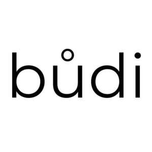

Trade Mark Journal No.2026/010 6 March 2026
UK00004330971 27 January 2026 (18,21,25,27)

- Class 18
- Clothes for animals; Bags.
- Class 21
- Bottles; Water bottles; Sports bottles [empty].
- Class 25
- Clothes; Clothing; Swaddling clothes; Beach clothes; Nappy pants [clothing]; Denims [clothing]; Work clothes; Jackets [clothing]; Shorts [clothing]; Aprons [clothing]; Clothes for sports; Jackets (Stuff -) [clothing]; Stuff jackets [clothing]; Clothes for sport; Linen clothing; Headbands [clothing]; Headbands for clothing; Kerchiefs [clothing]; Bottoms [clothing]; Gloves [clothing]; Gloves as clothing; Furs [clothing]; Trunks being clothing; Maternity clothing; Jerseys [clothing]; Layettes [clothing]; Clothing layettes; Clothing for leisure wear; Woolen clothing; Gabardines [clothing]; Ready-to-wear clothing; Hoods [clothing]; Clothing for babies; Bodies [clothing]; Tops [clothing]; Gussets for underwear [parts of clothing]; Belts [clothing]; Belts for clothing; Playsuits [clothing]; Knitwear [clothing]; Corsets [clothing, foundation garments]; Silk clothing; Fabric belts [clothing]; Mitts [clothing]; Hats (Paper -) [clothing]; Paper hats [clothing]; Braces for clothing; Belts (Money -) [clothing]; Money belts [clothing]; Chaps (clothing); Gussets for bathing suits [parts of clothing]; Ready-made clothing; Embroidered clothing; Casual clothing; Gym shorts; Gym suits; Yoga shoes; Jogging pants; Jogging shoes; Jogging outfits; Yoga gloves ; Yoga pants; Exercise wear; Yoga shirts; Gymwear; Clothing for gymnastics; Yoga socks; Tennis wear; Sports wear; Leisure wear; Ladies wear; Maternity wear; Casual wear; Headgear for wear; Evening wear; Head wear; Dresses for evening wear; Swim wear for gentlemen and ladies; Infant wear; Children's wear; Jogging bottoms [clothing]; Jogging sets [clothing]; Sports pants; Sports clothing [other than golf gloves]; Athletic clothing; Sweatpants; Dress shirts; Training shoes; Sport shoes; Sweat pants; Sweat shirts; Sport shirts; Sports shirts; Hats; Baseball hats; Bucket hats; Baseball caps and hats; Sports caps and hats; Rain hats; Sun hats; Paper hats for use as clothing items; Beanies; Caps [headwear]; Caps being headwear; Bandannas; Headbands; Sweaters; Knitted gloves; Gloves for apparel; Fingerless gloves as clothing; Socks; Men's socks; Sports socks; Beanie hats; Coats; Clothing for children; Clothing for infants; Infant clothing; Men's clothing; Clothing for men, women and children; Jackets being sports clothing.
- Class 27
- Gymnasium exercise mats; Gymnasium mats; Yoga mats; Personal exercise mats; Floor coverings [mats] for use in gymnastic activities; Meditation mats; Bags adapted for yoga mats.
J.R Listo Limited